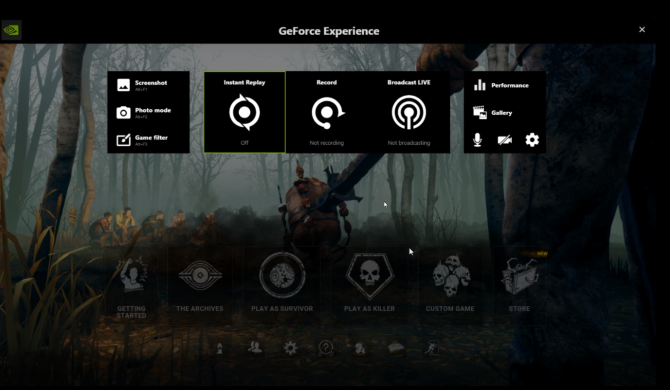
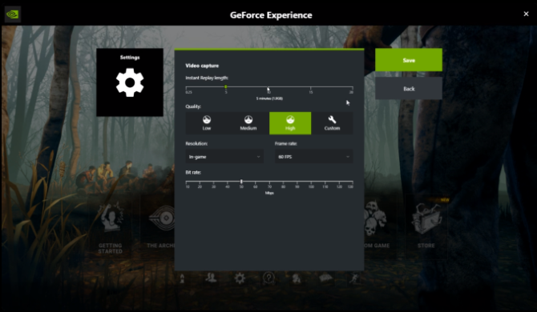

How I Record Videos
I record my videos using Nividia's Shadowplay only.
The main reasons I like to use Shadowplay are -
- It is free and easy to install and update
- It has an instant replay system where I can press a button and it saves the previous minute
- It has ingame overlays to control recording in supported games
- Does not impact the performence of games while it's in the background
I've never had any major issues while using Shadowplay. I would recommend any to try it if they plan on making videos. You can check it out here if you are interested.
|  |  |